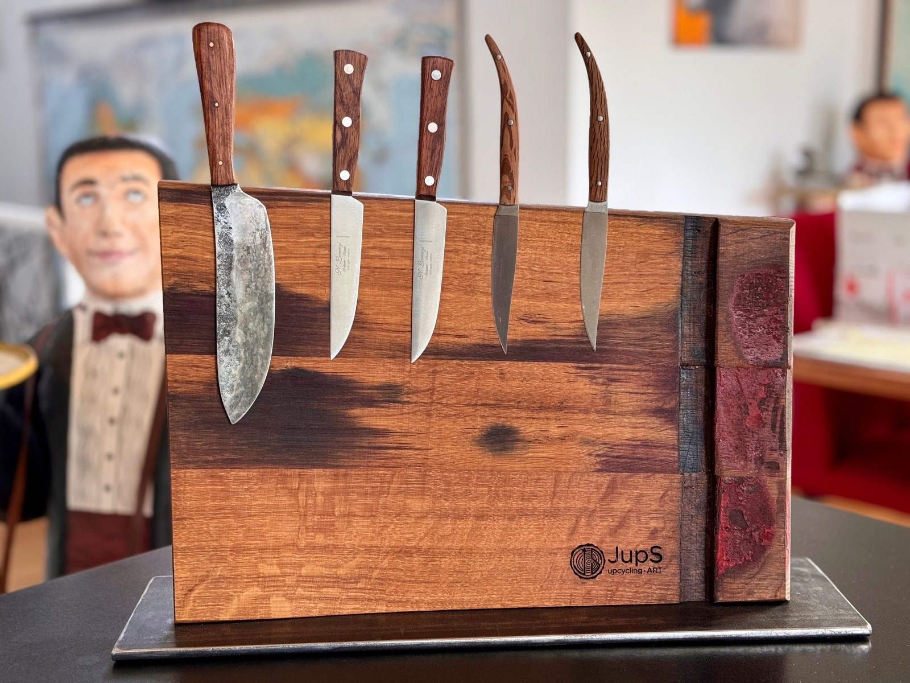
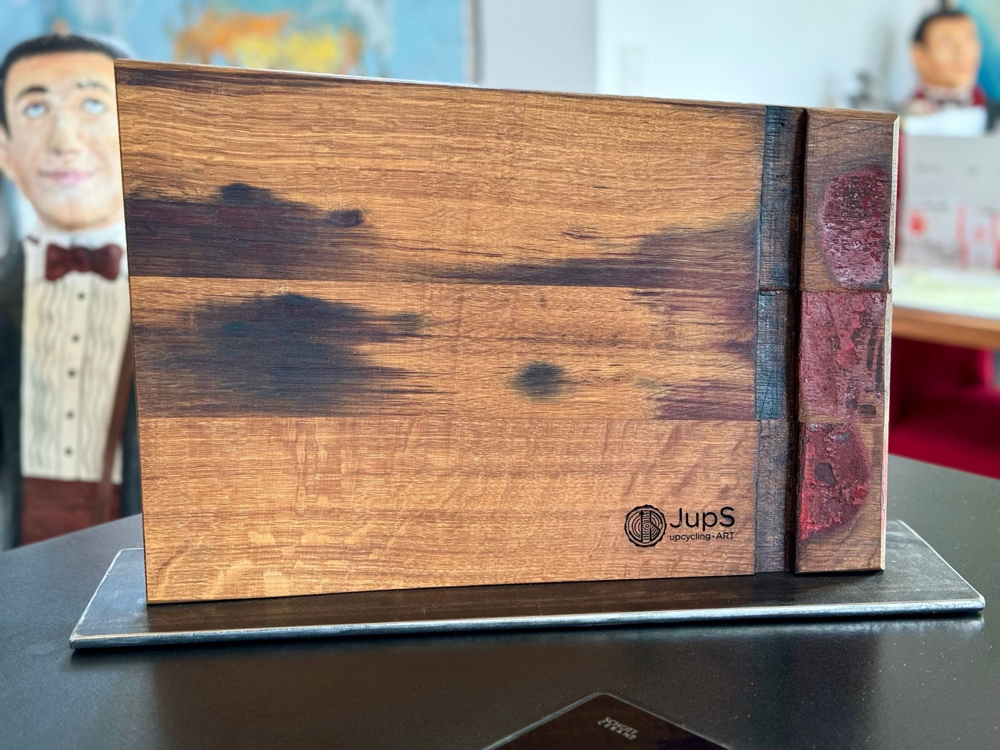
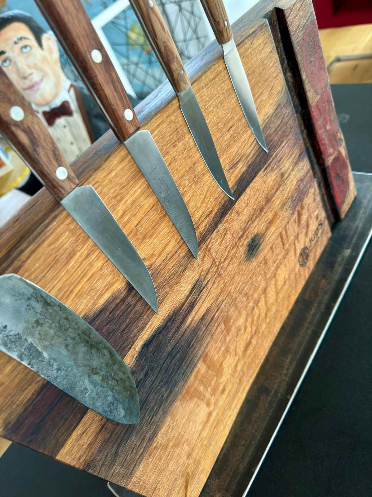
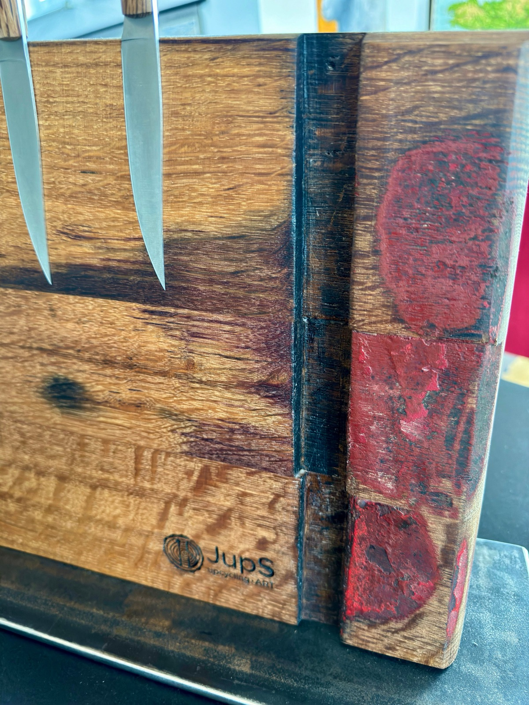
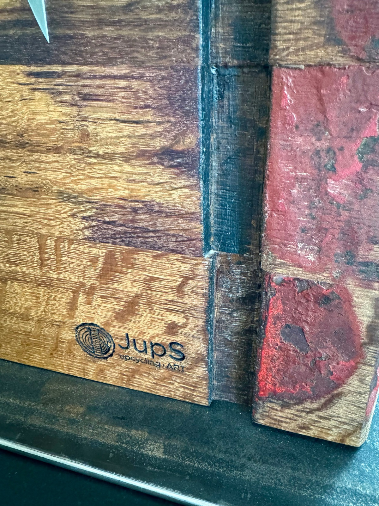
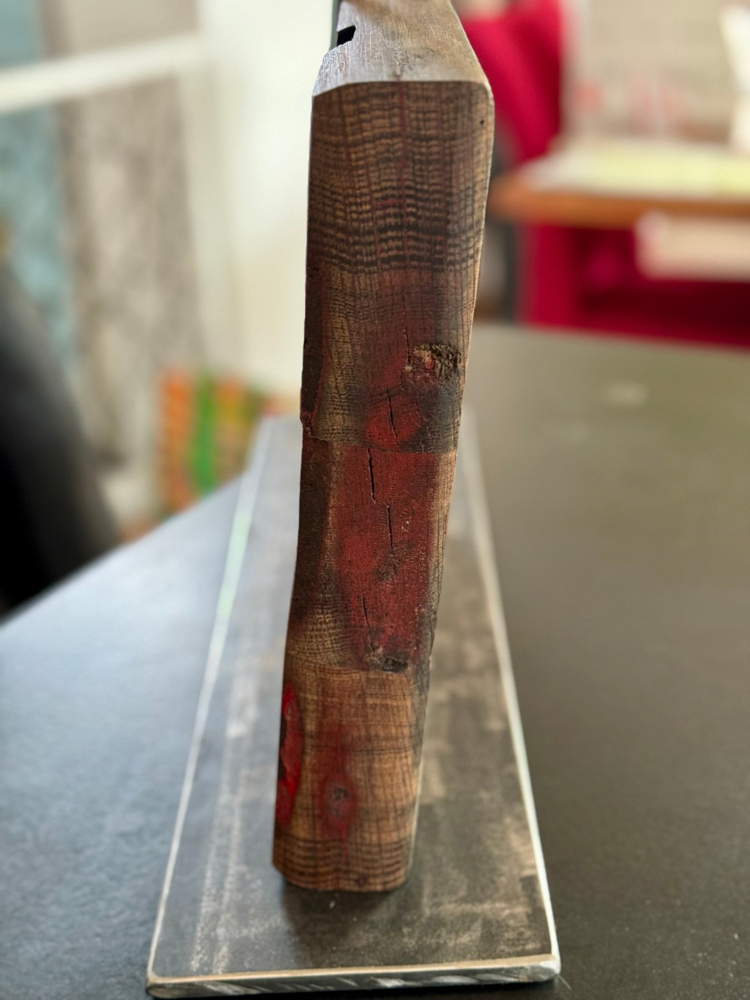

Küchenaccessoires · Handgefertigtes Unikat
229 €
Inkl. Versand. Preis inkl. MwSt.; aufgrund des Kleinunternehmerstatus wird gemäß § 19 UStG die MwSt. in der Rechnung nicht ausgewiesen.
oder direkt an jups.upcycling@gmail.com
Die große Ausführung für 5 Messer: Der Messerblock besteht aus alten Fassdauben mit originaler Kennzeichnungsfarbe des Winzers. In die Rückseite sind 15 starke Scheibenmagnete (25×5 mm, Typ N45, vernickelt) versenkt und mit Originalholzstopfen verschlossen.
Die Grundplatte ist eine massive, grob geschliffene Stahlplatte mit 8 mm Dicke – lediglich eingeölt, um Korrosion vorzubeugen. Auf der Unterseite sind Filzgleiter angebracht.
Das Eichenholz stammt aus einem alten Weinfass, wurde mehrfach geschliffen und mit lebensmittelechtem Sonnenblumenöl geölt.
Die Haltekraft der Magnete ist von den Messern abhängig – bitte prüfen Sie vor dem Kauf, ob Ihre Messer magnetisch sind. Abgebildete Messer sind Deko und nicht Teil des Lieferumfangs.
Die Fassdauben sind nicht gleichmäßig hoch und dick – deshalb die Maßangaben als Spanne. Holz ist ein Naturprodukt: Wuchs, Farbe, Struktur und Maserung sind bei jedem Baum verschieden. Kleine Lunker, Verfärbungen oder nicht perfekte Kanten sind keine Qualitätsmängel, sondern Teil des Charakters.
Pflegetipp: Holz und Stahlplatte gelegentlich leicht einölen – das sieht beim Holz schön aus und verhindert beim Stahl Rostflecken.